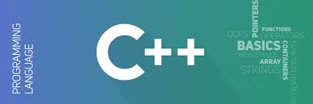

Bahasa Pemrograman C

Bahasa pemrograman C ini dibuat pada tahun 1972. pembuat bahasa C adalah "Dennis Ritchie". bahasa C ini menjadi bahasa pemrograman yang sangant popular yang sering sekali digunakan atau dipelajari di perguruan tinggi jurusan IT untuk pengenalan pertama kali mengenalkan kemahasiswa sebelum mempelajari mendalam tentang bahasa pemrograman yang lain. bahasa C dikenal sebagai "bapak" dari bahasa pemrograman lain.
Bahasa Pemrograman C++
Bahasa pemrograman C++ merupakan bahasa pemrograman yang dikembangkan dari bahasa C. bahasa C++ pertama kali dikembangkan oleh "Bjarne Stroustrup". pada bahasa C++ ini memiliki sintaks penulisan kode yang hampir mirip, namun memiliki perbedaan dalam menangani setiap permasalahan yang dihadapi/ada. pada bahasa C dalam penyelesaian masalahnya dilakukan dengan membagi persub sub masalaha yang lebih kecil lagi kemudian dituliskan dengan menggunakan kode panah dan lainnya yang dilakukan secara prosedural (terperinci). sedangkan bahasa C++ merupakan bahasa yang berorientasi dengan object, yang setiap permasalahannya dibagi kedalam class class.